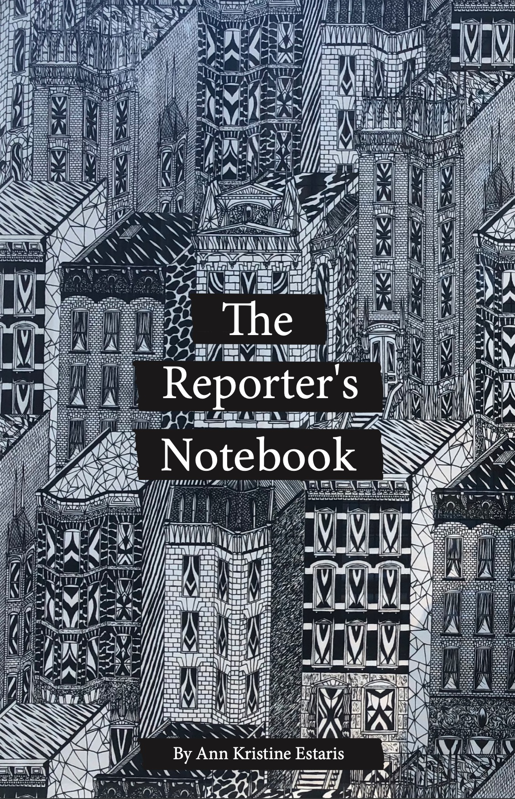
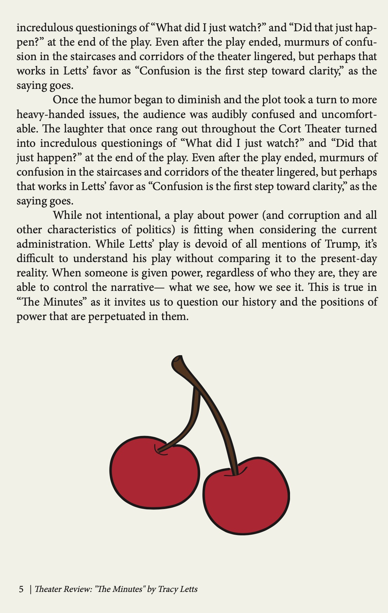
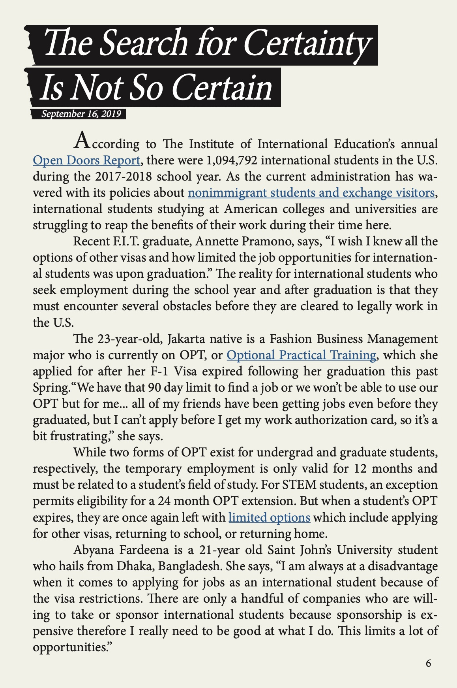

This is an excerpt from the final zine I created for Journalism+ Design Toolkit 2020. To create this zine, I made a sixteen-page, half-letter sized booklet using Adobe InDesign. It's called "The Reporter's Notebook" and it features five pieces that I wrote for different Journalism+Design courses. All illustrations in the zine were created using Adobe Illustrator and all images were taken by me, with the exception of one graph from The Institute of International Education. Click here to download the zine.
  